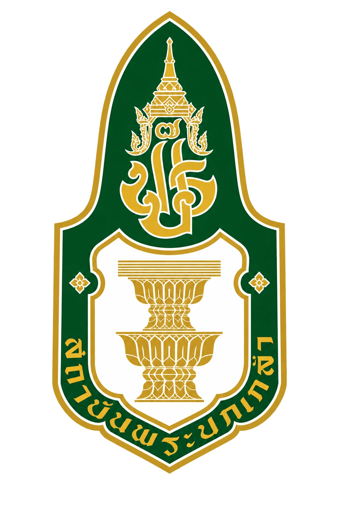

วาระครบรอบ 140 ปี ความสัมพันธ์ทางการทูตไทย–ญี่ปุ่น (1887–2027)
140 ปี และหลังจากนี้เราจะทำอะไรเพื่อไทย–ญี่ปุ่นต่อไป
日タイ修好140周年、そしてその先へ。
Beyond 140 — เวทีผู้นำรุ่นใหม่ไทย–ญี่ปุ่น 4 กลุ่ม เพื่อความร่วมมือที่ไปต่อ

Beyond 140 ไม่ได้ออกแบบให้จบในวันงาน แต่เป็นจุดเริ่มต้นของเครือข่ายผู้นำรุ่นใหม่ไทย–ญี่ปุ่น ที่ได้พบกัน ร่วมคิด และส่งต่อกันได้จริง — เปลี่ยนการ รำลึกอดีต ให้เป็นการ ร่วมสร้างอนาคต